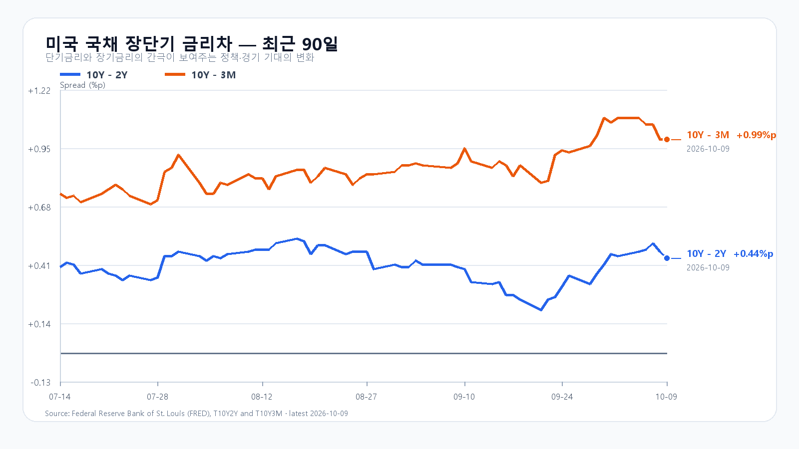

미국 지수는 반등했지만 반도체는 크게 밀렸다. 10월 9일 QQQ는 0.23% 올랐고 SOXX는 5.01%, SMH는 4.32% 하락했다. AI 인프라 투자 자금조달 부담이 다시 부각되며 Nvidia·AMD·Micron이 동반 약세를 보였다.
메모리의 중기 수요는 하루 주가와 분리해서 봐야 한다. TrendForce는 서버 DRAM 다년 계약과 HBM 중심의 생산능력 배분이 현물 거래를 조용하게 만들고 있다고 설명한다. 오늘 국내 메모리주는 이 중기 흐름보다 미국 반도체 ETF 낙폭과 정규장 수급의 영향을 먼저 받을 가능성이 크다.
직전 KRX 거래일 KOSPI는 6,625.93으로 2.61%, KODEX 레버리지는 5.44% 하락했다. 장전 NXT에서 삼성전자는 259,500원(-0.95%), SK하이닉스는 1,653,000원(-1.67%)이다. 제한된 유동성의 참고값이므로 개장 후에는 6,530선과 외국인·프로그램 수급을 함께 확인해야 한다.
기본 시나리오는 KOSPI 6,530~6,700, 확률 45%다. 6,700을 회복하고 외국인 현물과 프로그램이 동반 순매수로 돌아서면 6,700 초과~6,830의 강세 범위를 본다. 6,530 아래에서 두 수급이 함께 매도로 확대되면 6,360~6,530 미만의 약세 범위가 열린다.
KODEX 레버리지는 99,350원을 1차 지지, 101,400원을 반등 기준, 103,250원을 저항으로 둔다. 대응 점수는 공격 10, 관망 50, 방어 40이다.
| 종가 시나리오 | 범위·확률 | 15시 20분 확인 조건 | 전환 신호 |
|---|---|---|---|
| 강세 | 6,700 초과~6,830 · 20% | 6,700 상회 · 외국인·프로그램 동반 순매수 | 6,700 아래 재진입 |
| 기본 | 6,530~6,700 · 45% | 6,530 이상 · 외국인 순매도 8천억원 미만 | 범위 이탈 |
| 약세 | 6,360~6,530 미만 · 35% | 6,530 미만 · 외국인·프로그램 동반 순매도 | 6,530 회복 |
